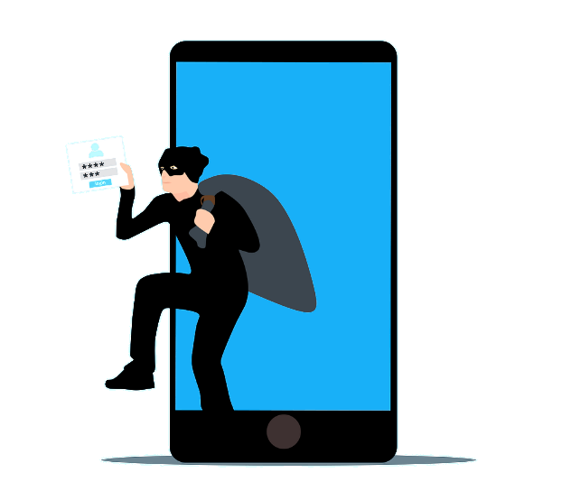
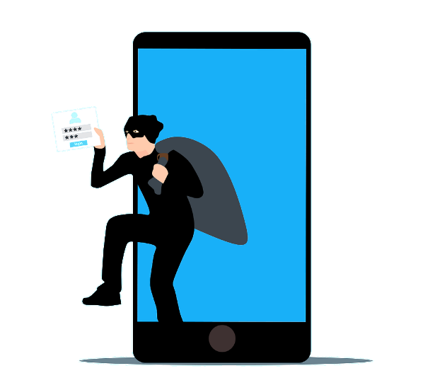

Cyber Safety

Why is Cyber Safety Important?
One of the prime reasons for implementing Cyber Safety is the
protection of confidential data. Cyber Safety can protect these
data to a great extent. These data protection go a long way,
especially in cases of government-related data. Breach of such
data of national importance can cause serious disturbance to the
nation.
Additionally, a breach of personal data would result in personal
losses such as reputation damage, etc. There are high chances of
an extortion threat. By giving in to the threat, there are chances
of financial damages.
Data privacy is important in this digital world. For example,
breach of personally identifiable information (PII), intellectual
property, and protected health information (PHI) would make people
lose faith in the service and the possibility of recovering lost
customers or building faith again is a herculean task. This is
usually applicable in the sectors of hospitals and other
healthcare institutions, financial service programs, and power
plants.
However, the most fearsome aspect of the data breach through any
cyberattack is the mishandling of data. Through the following
segment, you will understand the various types of cyber attacks.
Based on the understanding of cyber-attacks and why cyber safety
is important, you can implement cyber safety measures accordingly.
 

Types of Cyber Attacks
Malware
Identity Theft
Social Engineering Attack
SQL Injection Attacks
Malware, or malicious software, is any program or file that is intentionally harmful to a computer, network or server. Types of malware include computer viruses, worms, Trojan horses, ransomware and spyware. These malicious programs steal, encrypt and delete sensitive data alter or hijack core computing functions and monitor end users' computer activity. Learn more about malware here.
Identity theft occurs when criminals steal a victim's personal information to commit criminal acts. Using this stolen information, a criminal takes over the victim's identity and conducts a range of fraudulent activities in their name.
Social engineering is the term used for a broad range of
malicious activities accomplished through human interactions. It
uses psychological manipulation to trick users into making
security mistakes or giving away sensitive information. Social
engineering attacks happen in one or more steps.
A
perpetrator first investigates the intended victim to gather
necessary background information, such as potential points of
entry and weak security protocols, needed to proceed with the
attack. Then, the attacker moves to gain the victim’s trust and
provide stimuli for subsequent actions that break security
practices, such as revealing sensitive information or granting
access to critical resources.
Types of social engineering attacks include baiting, phishing,
vishing, etc. Learn more about social engineering attacks
here
Structured Query Language (SQL) injection is a common method of taking advantage of websites that depend on databases to serve their users. Clients are computers that get information from servers, and an SQL attack uses an SQL query sent from the client to a database on the server. The command is inserted, or “injected”, into a data plane in place of something else that normally goes there, such as a password or login. The server that holds the database then runs the command and the system is penetrated.
Cyber Safety Tips
-
Create a strong password for all platforms. Try to create unique passwords. Most importantly, the passwords are not related at all. In this way, hackers will not succeed in their password guessing methodology.
-
Take regular, full back ups with rotation offsite. Take cloud back ups with versioning turned on and make sure external hard drives are only plugged in when backing up.
-
A firewall is your first line of defense against any attack
-
Use an anti-virus software. The free stuff is great, just make sure its enabled and updated.
-
Keep updating ! Especially if you are using flash or java
Exercise caution and be aware
-
Only open email attachments/click on links if you are expecting them.
-
Always turn on two-factor authentication on your social media platforms. In that way, you will be alerted whenever there is an attempt to access your account.
-
Never type your financial information on any site, especially, if the site lacks padlock on the page
Conclusion
It is always important to keep your data private and safe. Cyber-attacks have evolved throughout the years to enter your system/ network undetected. Thus, it is always important to be upgraded and updated on your Cyber Safety system to protect your data.